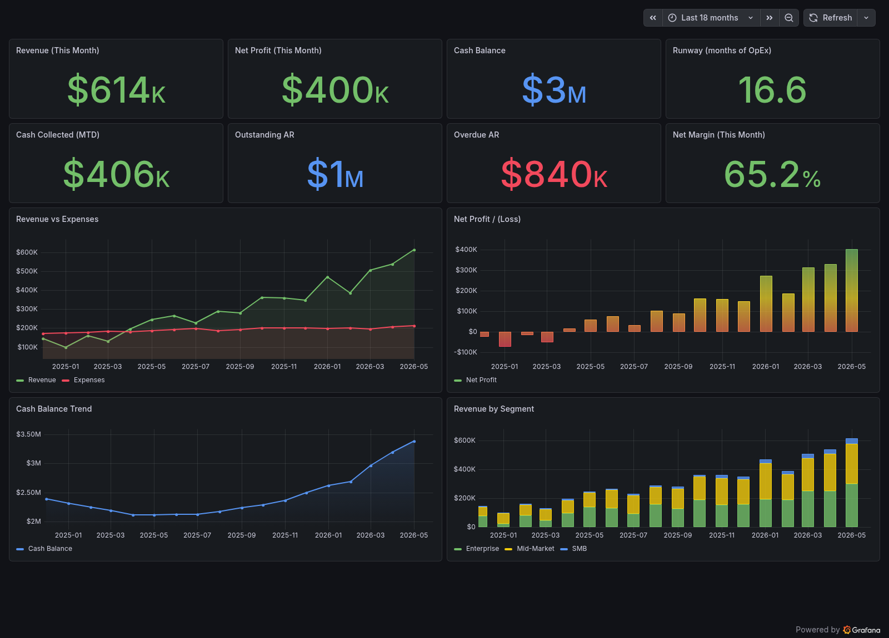
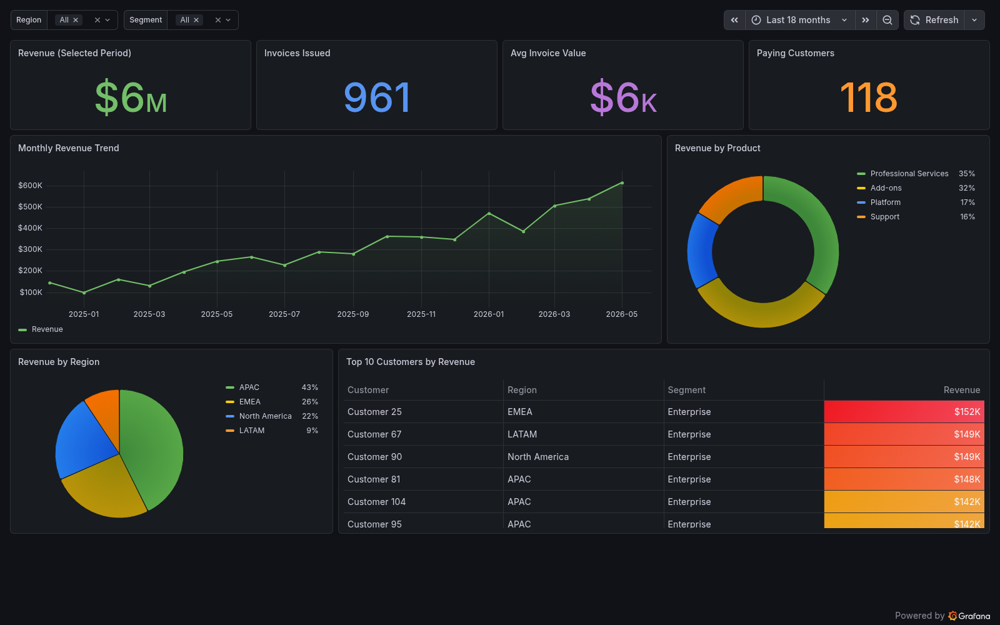
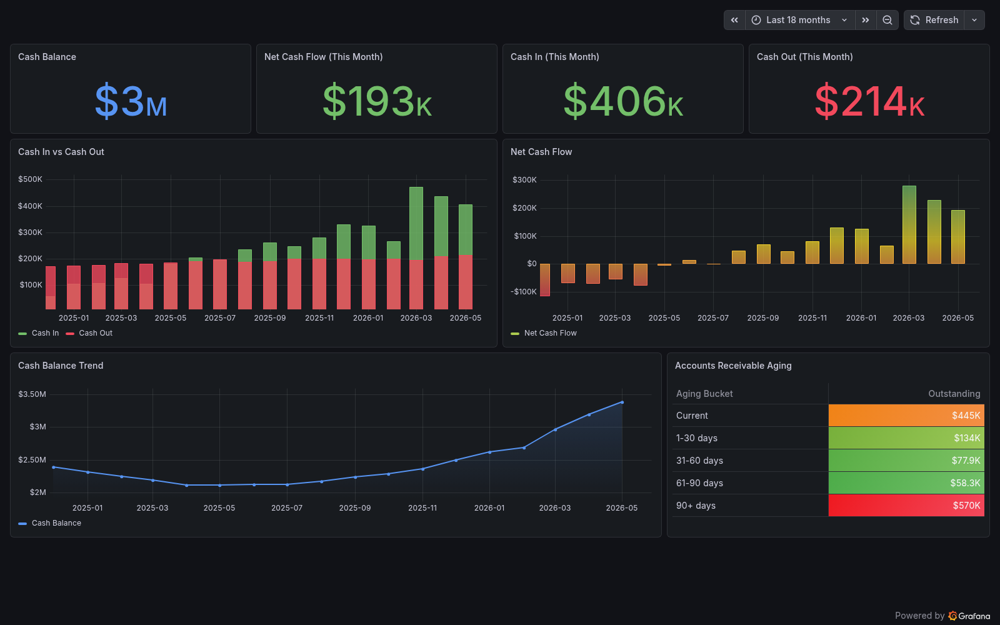
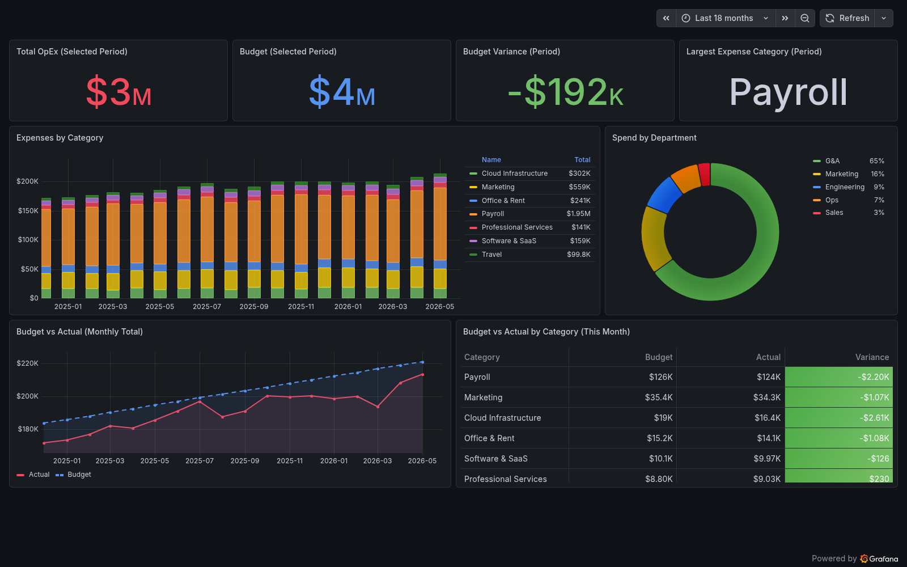

A runnable playbook for putting revenue, cash flow, expenses, and the executive KPIs that sit on top of them in front of the people who make decisions. One command brings up Grafana, a seeded Postgres, and four provisioned dashboards.
$ git clone …/grafana-playbook-finance && docker compose up -dFour views, each answering one question a finance team actually asks.

The headline read: revenue, net profit, cash balance, and runway up top, then revenue versus expenses, monthly profit, the cash trend, and revenue by segment below. The one screen you'd send the board.

Filterable by region and segment. Monthly revenue trend, revenue by product and region, and a ranked table of the top customers with color-graded values.

Cash in versus cash out, net cash flow, the running balance, and an accounts-receivable aging table that flags the 90+ day bucket in red.

OpEx versus budget with variance, expenses stacked by category over time, spend by department, and a budget-vs-actual breakdown per category for the month.
Not just dashboards — the reasoning and the data to back them.
Docker Compose brings up Grafana, PostgreSQL, and Prometheus, fully provisioned. No manual clicking to see it work.
~18 months of realistic invoices, expenses, and budgets generated on first boot, so every panel renders immediately.
Every metric maps to SQL you can read. The queries double as the definition of how each number is calculated.
Six chapters on data sources, metric definitions, dashboard design, alerting, and running it in production.
SQL by default, with patterns that transfer to MySQL, BigQuery, Snowflake, and Prometheus.
Dashboards live as JSON in the repo. Changes are reviewable in pull requests, not buried in a UI.